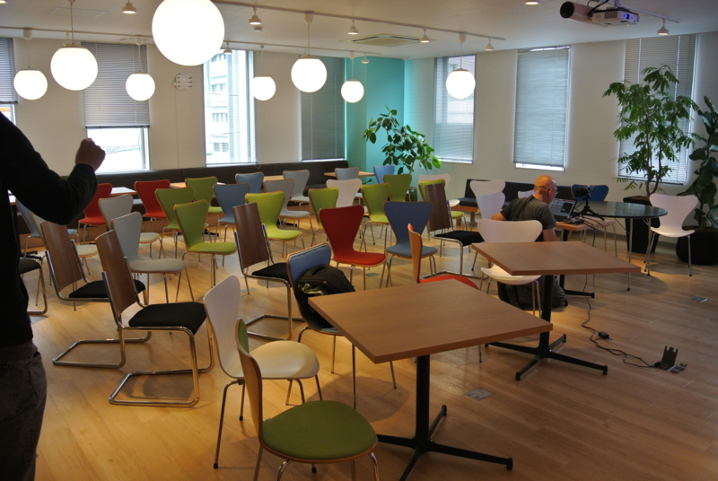

プログラミング生放送勉強会 第29回＠サイボウズ株式会社 松山オフィス #pronama 無事終了……！
公開日：
まぁ、本当に「無事」かどうかはわかりませんが（段取りよくなくて迷惑かけたところも少なからずあり）、とりあえず終わりました。この街に移るにあたって、プロ生を成功させることは自分に課して、またみんなの前でもやると表明した一つの公約でもあったので、ちょっと肩の荷が下りた感じ。
でも、どうだったかな？ 人数を集めるという点では成功した（東京換算*1で300人ぐらい集まりました）と思うけれど、みんなに楽しんでもらえたかどうか。別に人数を集めるのが目的じゃないし、デカいのを一つデキればいいというわけじゃないわけで。みんなのモチベーションを作っていける継続的な場になって初めて、成功と言えるような気もしてきました。
これは @nakaji とも少し話したのだけど、これからも小規模な勉強会（という名の飲み会）を継続してやって、その中から参加者や登壇者が出るような流れも作れたらいいなぁ。今回 LT をやってもらった ゆるふわ.rb (@yurufuwarb) | Twitter さんにお邪魔してみるのもアリなのかな（Ruby は素人レベルだけど）。酒を飲みながら、ほかの会場のプロ生へオンラインで突っ込みを入れるサテライト勉強会構想や、なにかテーマを決めてまったりお勉強する構想なんかも考えていますが……実現するかな？ｗ
それはまぁ、ともかく。
サイボウズ株式会社 松山オフィス
6/14 プログラミング生放送勉強会 第29回＠サイボウズ株式会社 松山オフィス 開催！ #pronama – プログラミング生放送
今回はサイボウズ株式会社 松山オフィスを貸していただきました。ありがとうございます。場所は、大街道の松山中央郵便局の近く。“五志喜”の向かい側と言えば、わかる人はわかるかも。
今まで知らなかったんですけど、サイボウズって松山が創業の地なんですね。なんで東京・大阪と並んで松山オフィスがあるのか、割と謎に思ってました（

会場設営の様子。めっちゃおしゃれな部屋だったのですけれど、50人入るには少し手狭だったので、机を搬出しりたりしました。机が当たらなかった人には申し訳ない感じ。
あと、なかじがつくった ASP.NET MVC 製のチェックインシステムが大活躍。割りと受付が楽になった。ネットワークなしで動作＋チェックインしたら一覧から削除が実現したら、本格的に全国の勉強会でも使えそう。
セッション
注：以下はセッションの解説ではありません。もしかしたら感想ですらありません。セッションを聞いて、自分が何となく思いついたこと・連想したことなどデス。
一日に100回デプロイできる開発環境の作り方
アトラシアンのエヴァンジェリスト @tomohn さんのセッション。タイトルは“羊頭”（釣りともいうｗ）でしたが、中身は“狗肉”にあらず。聴衆を巻き込んでいくスタイルは見事だなぁ、と思いました。
実は @tomohn さんのセッション、個人的に聞きたかったので、僕が参加を予定していた仙台か松山のプロ生にはきていただこうと思って、だいぶ前から手を回していました。
というのも、“継続的に価値を作り出す”とか“ソフトウェアの産地直送”みたいな開発の在り方がこれから主流になるだろうというのは理解しているつもりなのですが、どんなツールがどんなふうに使われているのかというのは、実務には関係のない僕にはこういう機会じゃないと触れられないので。耳学問がしたかったんですよね。
集団的な開発手法が洗練されていくことっていうのは、個人にだって大いに関係があります。実際に“ラピッドリリース”という形で恩恵を受けていたりするし、開発環境や周辺ツールが高機能化したり、無償で開放されたりする。自分はそういう製品の記事も書かなきゃいけなかったりするのだけど、そういうとき、ただ便利だ！ 無料だ！ ヒャッハーー！ってだけじゃなくて、その製品が大きなトレンドの中でどういう位置を占めているのかなのかもちゃんと把握できなきゃいけない（仮に記事に直接書かなくてもな）。そういうことを怠ると、すぐに頓珍漢なことを書いて Twitter や はてブ で晒しあげられたりするハメになるしねｗ
あと、ソフトウェア開発の世界にはバックグラウンドに経営学があり、その裏にはまたミクロ経済学や“組織の経済”なんかの知識が控えている。大学時代にそういう世界へ興味を持っていたものとして、それがどんな感じに実際の社会に表出しているのかということにはとても興味があるのです。よい成果を持続的に生み出せるようにチーム（共同体）を設計・運用したいというのは、なにもソフトウェア開発の世界だけじゃないですよね？
いろいろな Windows Runtime API
まさか地を這ってくるとは思わなんだ。遠いところ申し訳ない。
第29回プログラミング生放送@松山で登壇してきました - がりらぼ
あ ヘルスビル行くの忘れてた
— がりっち (@garicchi) 2014, 6月 15関係ないけど @garicchi に早く彼女ができますように。
メンテナブルな JS ってなんだろう
サイボウズの @datomotu さんのセッション。いかに自分が恨まれないようにしながら、チーム内で共通のルール（コーディングスタイルとか）を確立するして押し付けるかという生々しいお話は、大変参考になった（違
初めから参加してる場合はいいけど、あとからチームに参加する人をみんなのレベルへ引き上げるにはどうすればいいんだろう
— ご注文はだるやなぎですか？ (@daruyanagi) 2014, 6月 14けれど、本筋とは関係ないのだけど、途中から参加するメンバーがいたり、メンバーの出入りが激しい場合はどうすればよいのだろう。
同じ構成員でスタートできる場合、ルールをみんなで決めることはメンバーの参加者意識を高めるうえで有用だし、輪講などを開催してメンバーのコーディングレベルを高めるのも有効だ。けれど、あとから参加するとそういうことは難しい。自分が参画したわけでもないルールの従うのは苦痛だし、レベルが低い人一人を引き上げるために全員が貢献するのも、最初はともかく継続が難しい。
懇親会のときに少し聞いてみたけれど、まだそういうケースは体験してないそうで、これからの課題になりそう。
無償版 Visual Studio でいろいろ Web 開発
@kiyokura さん。「Visual Studio 2013 Express for Web Update 2」＋「Web Essentials 2013」拡張機能の組み合わせが、無償でできる Web 開発において最強ということが証明されました。
Visual Studio 便利じゃねーか。WebMatrix 使ってる場合じゃねえ #pronama
— ご注文はだるやなぎですか？ (@daruyanagi) 2014, 6月 14「Web Essentials」が無償版でも使えることは知ってたのだけど、JavaScript をここまで変態的（褒め言葉）にコード保管してくれるとは。そろそろ本格的に WebMatrix は要らなくなりそう。［このフォルダを Web サイトとして開く］ツールだけ作って Visual Studio に乗り換えようかなぁ。
Web Essentials 2013 がVS2013 Express for Webでも使えるようになっていた件 - きよくらの備忘録
Build より TechEd のが面白かった件
http://www.slideshare.net/shibayan/build-teched
松山までわざわざ俺を社会的に殺害しにきた件。
— ご注文はだるやなぎですか？ (@daruyanagi) 2014, 6月 14
ライトニングトーク
あー、もう書くの疲れた！（また今度時間があれば書くかも） あとは、
にお任せしちゃおう！ とりあえず、冒頭にも言ったけど、ゆるふわ.rb 行ってみたい。あと、船乗りたいよね、船。来年の春ぐらいまでには実現させたい。
最後に、わざわざ東京から来てくれた @kirin_nico なのだけど、LT が時間切れになった挙句、帰りの松山空港で半田ごて（？）が手荷物検査で引っかかって収監された*2とあとで聞いて、とても申し訳なく思っていることを最後に申し添えておく。
@jz5 @daisuke_nomura @kirin_nico きりんさんが連行されたよ……
— 酢酸(さくさん) (@ch3cooh) 2014, 6月 15それではみなさん、また遠くないうちにお会いしましょう。